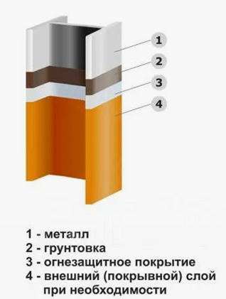
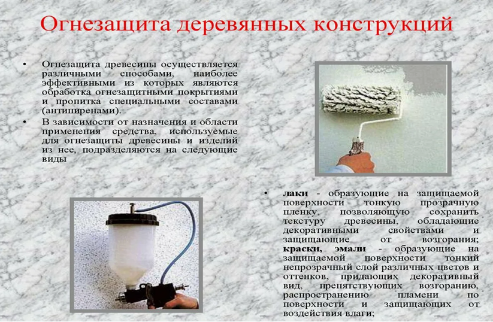
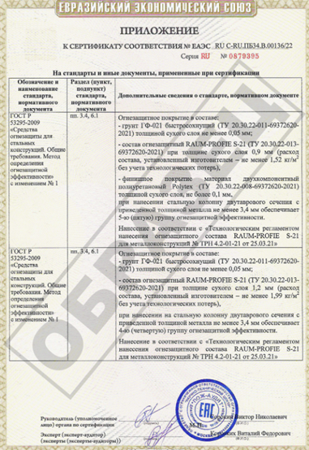
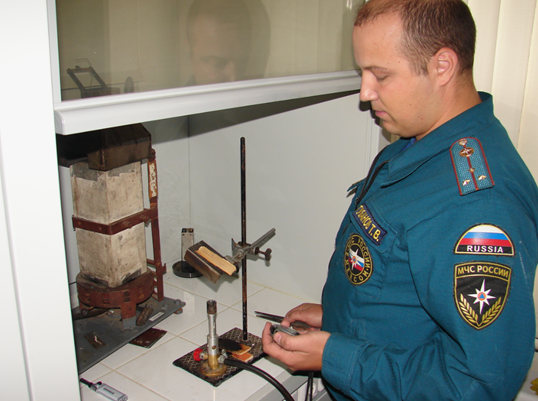
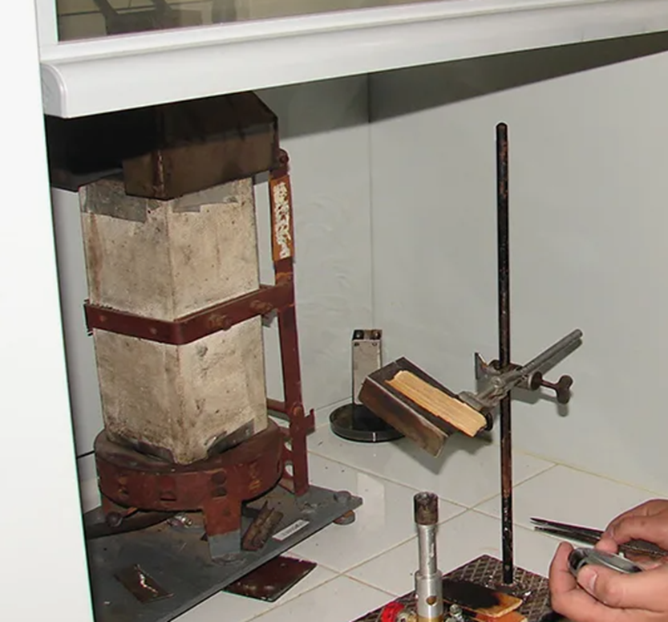
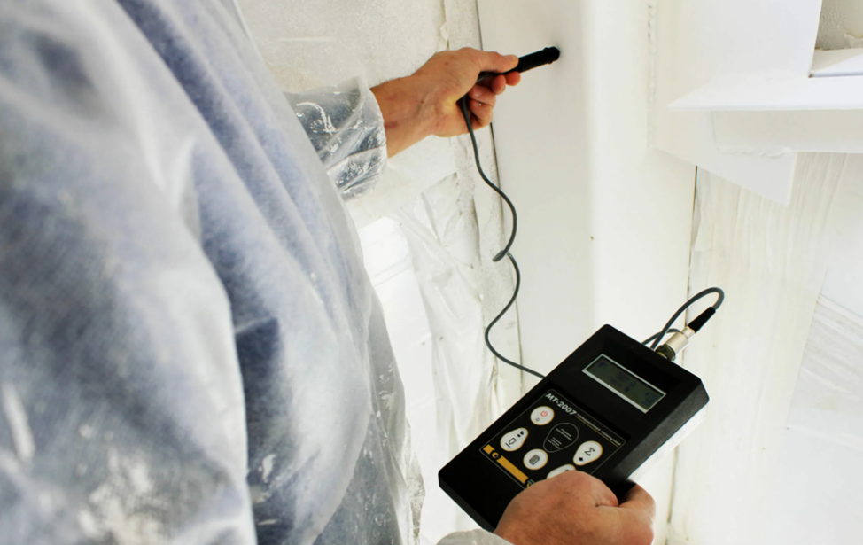

Огнезащитная обработка

В этом уроке поговорим о том, как защитить металл и дерево от огня. Вы узнаете, как это делают, и какие требования есть к тем лицам, кто это делает.
Огнезащита – это важная часть защиты от пожаров. Она помогает сделать конструкции менее опасными и более стойкими к огню.
Основные задачи огнезащиты:
- не дать конструкции загореться;
- остановить пожар, если он начался;
- ограничить распространение огня;
Чтобы защитить конструкции, используют разные способы. Для металла и дерева есть свои способы.
Для металла используют специальную защиту и покрытия.

Для дерева – пропитку, лаки.

Особенно важно защищать металл, потому что он быстро нагревается. Если металл не защищен, он может потерять свою несущую способность за 10-40 минут. Но если его защитить, то он может выдержать огонь 2,5 часа.
Способы защиты металла, дерева и лёгких ограждений отличаются, потому что у них разная природа и поведение при нагревании.
Способы огнезащиты:
- Конструктивные способы огнезащиты – облицовка объекта огнезащиты материалами
- Комбинированный способ – сочетания различных способов огнезащитной обработки
- Покрытие краской обычной или вспучивающейся (как правило металлоконструкции)
- Пропитка (дерево)
Требования к огнезащитным составам
Огнезащитные составы должны быть одобрены и проверены по правилам. У них должны быть документы, которые подтверждают их производство и использование. Также нужен сертификат пожарной безопасности.

В документах должны быть такие сведения:
- насколько хорошо состав защищает от огня;
- сколько состава нужно, чтобы получить защиту нужного уровня;
- как выглядит состав; как его наносить: как подготовить поверхность, какие грунты использовать, как наносить слои, как сушить;
- как долго состав можно хранить и как правильно хранить; как работать с составом, чтобы не пострадать и не устроить пожар.
Если нужно, в документах можно указать, какие краски и лаки можно наносить на огнезащитный слой, чтобы защитить его или сделать красивым.
Только организации, которые имеют разрешение на работу с огнезащитными составами, должны производить их и поставлять.
Огнезащитные составы нужно использовать по инструкции.
Испытания огнезащитных составов должны проводить в специальных организациях, у которых есть разрешение на это (например, испытательные-пожарные лаборатории МЧС России).

Вместе с испытаниями огнезащитных составов нужно проводить контрольные испытания, замеры.

Огнезащитные покрытия должны быть такими, чтобы их можно было восстановить после окончания срока службы.
Нельзя использовать огнезащитные покрытия там, где их нельзя будет заменить или восстановить.
Если огнезащитные покрытия покрыты краской, то их характеристики нужно проверять вместе с краской.
Характеристики огнезащитных составов определяет их производитель и лаборатория.
По желанию заказчика можно провести дополнительные испытания, чтобы узнать, как меняется эффективность огнезащиты от толщины металла и покрытия.
Огнезащитные составы нужно хранить и перевозить так, чтобы они не потеряли свои свойства.
Нельзя использовать огнезащитные составы на неподготовленных поверхностях.
По завершении огнезащитных работ оформляется акт приема-передачи выполненных работ. В нем должны быть указаны следующие данные:
- наименование и юридический адрес организации, которая проводила работы, а также ее идентификационные номера — ИНН и ОГРН;
- информация о том, что у организации есть разрешение на проведение огнезащитных работ;
- адрес объекта, где проводились работы; место проведения работ;
- полное наименование и условное обозначение средства огнезащиты, а также его огнезащитная эффективность; гарантийный срок службы средства огнезащиты; дополнительная информация (при необходимости).
К акту необходимо приложить копии технической документации на средства огнезащиты, инструкции по их нанесению и сертификаты соответствия.
Если огнезащитные работы проводились на металлических или железобетонных конструкциях, в акте также нужно указать сведения о проектной документации (проекте огнезащиты).
Методы контроля качества огнезащитных работ:
- Контроль по предоставленной документации
В рамках контроля проверяют документы на проведение огнезащитных работ. Акт проведения огнезащитных работ должен содержать информацию о месте работ, виде объектов, их состоянии, средствах огнезащиты, их марках, расходе, технологии нанесения. Также в акте должны быть подписи тех, кто проводил работы и принимал их. На средство огнезащиты, кроме сертификата соответствия и документов о качестве, должна быть техническая документация. Во время проверки огнезащитных работ нужно убедиться, что средство огнезащиты соответствует проекту. Также нужно проверить, есть ли у организации, которая делала огнезащиту, лицензия. Ещё нужно убедиться, что работа выполнена хорошо. - Визуальный контроль
Если на покрытии есть необработанные места, трещины, отслоения или другие повреждения, то оно плохо защищает от огня. Особенно внимательно нужно проверять места, где соединяются части предмета, и те места, куда сложно нанести защитное покрытие. - Измерение толщины огнезащитного покрытия
Чтобы проверить толщину защитного покрытия на металлических конструкциях, используют специальные приборы. Для покрытий толщиной до 15 миллиметров подойдут магнитные толщиномеры, ультразвуковые толщиномеры и микрометры. А для покрытий толщиной 15 миллиметров и больше можно использовать штангенциркуль или игольчатый щуп с линейкой.

Контрольные вопросы:
1) Для чего необходима огнезащитная обработка
2) Сколько времени металл без огнезащитной обработки, может выполнять несущую способность в условиях пожара?
3) Методы контроля качества огнезащитной обработки